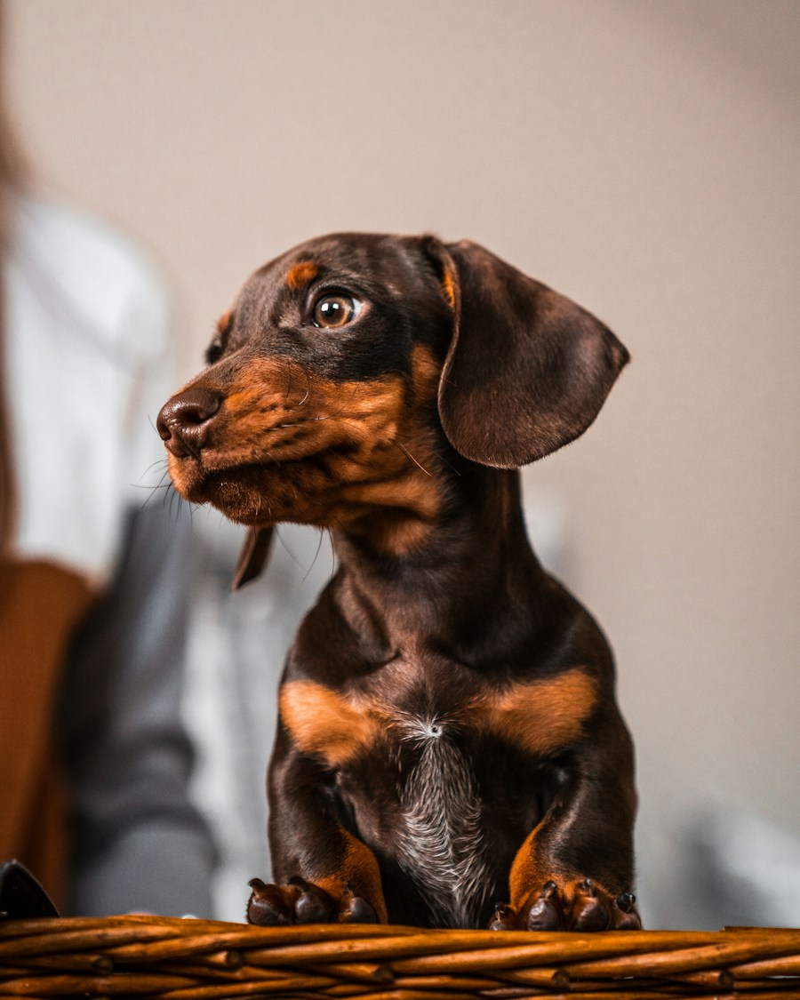

Compañeros de vida

Es una raza alemana criada para ayudar en la caza de animales que viven en madrigueras.
Tiene cuerpo alargado, patas cortas y puede tener pelo corto, largo o duro.
Es valiente, curioso, leal y puede ser bastante decidido.
Debe mantener un peso saludable y evitar saltos frecuentes para proteger su espalda.
Disfruta pasear, olfatear y jugar sin realizar esfuerzos excesivos.
Conesa a màs perros